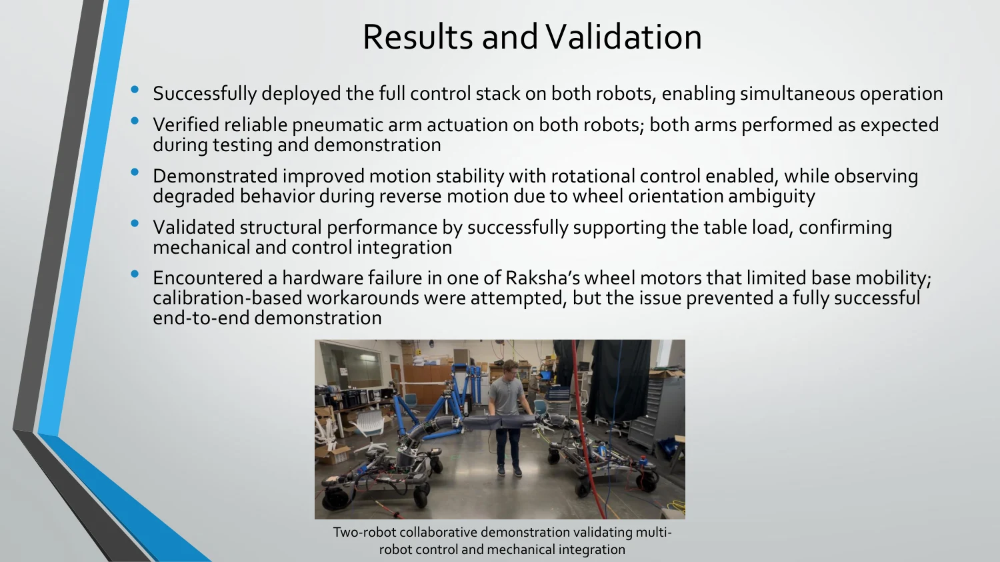

BYU Robotics and Dynamics Lab / Fall 2025
Dual-robot collaborative table carrying
Deploying an existing control stack on a second mobile robot, with ROS namespacing, rotational stabilization, and mechanical integration.

Open research presentation PDF in a new tabProblem / objective
The RAD Lab is developing a system that helps a human carry a table. A pneumatic robotic arm uses tracked motion to infer human intent, and its sensor feedback generates real-time commands for a mobile base.
The existing architecture ran on only one robot, Akela. The objective was to deploy that behavior on a second robot, Raksha, while improving modularity and motion stability.
My contribution
- Deployed and validated the existing ROS 1 stack on Raksha, establishing a consistent software baseline.
- Adapted configuration, calibration, and launch files for the second platform.
- Implemented ROS namespacing to isolate topics, nodes, and parameters for simultaneous operation.
- Implemented rotational stabilization logic to reduce orientation drift during motion.
- Machined and integrated mechanical hardware needed to support the table demonstration.
Technical approach
Separate robot namespaces, consistent behavior
The original system’s topics and nodes shared a single namespace. Isolating the two robots’ topics, nodes, and parameters allowed both control stacks to operate simultaneously while retaining the existing behavior.
Control and hardware integration
I tested closed-loop behavior with external position feedback and diagnosed issues across sensing, control, and hardware nodes. The rotational controller stabilized orientation; it did not provide commanded rotation.
Results
The full control stack was deployed on both robots, enabling simultaneous operation. Pneumatic arm actuation was validated on both platforms, and the mechanical structure supported the table load.
Rotational control improved motion stability, although reverse motion exhibited degraded behavior due to wheel-orientation ambiguity.
Hardware limitation
A wheel motor on Raksha failed, limiting base mobility. Calibration-based workarounds were attempted, but the failure prevented a fully successful end-to-end demonstration.
Documented next steps
Resolve the motor failure, improve stabilization in reverse, and extend the controller to commanded rotation. ROS 2 migration and a simulation environment were proposed as future improvements.